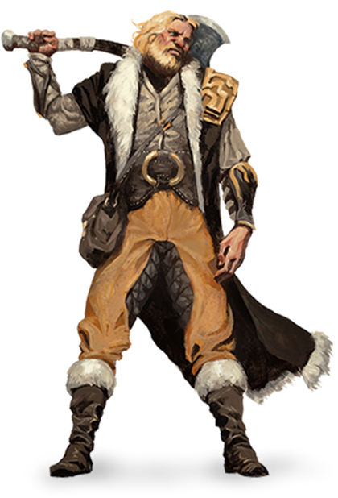

Ярость некоторых из них проистекает из общения со свирепыми духами
животных. Другие черпают её из злости на полную боли и страдания
действительность. Но для каждого варвара ярость — это источник не
только боевого безумия, но и невероятных рефлексов, стойкости, а
также непревзойдённой силы.

Первобытные инстинкты
Жители посёлков и городов настолько гордятся своей
цивилизованностью, отличающей их от животных, словно отрицание
собственной природы подчёркивает их превосходство. Варвары же,
напротив, считают цивилизованность проявлением слабости. Связь между
их животными инстинктами, первобытной энергетикой и свирепой яростью
очень сильна. Варвары чувствуют себя неуютно в окружении стен или в
толпе, но раскрываются в родных диких просторах, в тундре, джунглях
или степях, где их племена живут и охотятся. Лучше всего варвары
проявляют себя посреди хаоса битвы. Они могут впасть в состояние
берсерка, утратив контроль над собственной яростью, и получая взамен
нечеловеческую силу и стойкость. Варвар может лишь несколько раз
воспользоваться резервами собственного гнева, прежде чем ему
потребуется отдых, но обычно этих нескольких раз хватает, чтобы
справиться с любой угрозой, встреченной на пути.
Жизнь, полная опасностей
Не все члены племён, которых в цивилизованном обществе называют
варварами, имеют класс «варвар». Настоящий варвар среди этих людей
так же редок, как опытный воин в городе, и он исполняет схожую роль
защитника людей и военного лидера. Жизнь в диких местах таит в себе
опасность: соперничающие племена, смертельно опасная погода и
ужасные чудовища. И варвар бросается в борьбу с этими опасностями,
защищая своих людей.
Смелость перед лицом опасности делает варвара превосходным
кандидатом в искатели приключений. Кочевой образ жизни часто
привычен для примитивных племён, и непоседливая жизнь авантюристов
не составляет трудности для варвара. Некоторые варвары скучают по
сплочённому семейному укладу своих племён, но в конце концов находят
замену в узах, связывающих членов отряда.
Содание Варвара
Когда вы создаёте персонажа варвара, подумайте о том, откуда ваш
персонаж прибыл, и о том, какое место в мире он занимает. Поговорите
с вашим Мастером о подходящем происхождении вашего варвара. Пришли
ли вы из далёких земель, став чужаком на новой территории? Или
кампания происходит в жестоких землях, где варвары являются обычным
делом?
Что заставило вас вести жизнь искателя приключений? Вы соблазнились
переселением на новые земли обещаниями богатства? Вы присоединились
к солдатам этих земель перед лицом общей угрозы? Может, чудовища или
вторжение орды изгнали вас из вашей родины, сделав безродным
беженцем? Может быть, вы были пленником на войне, приведённым в
цепях в «цивилизованные» земли и только там завоевали свою свободу?
Или, возможно, вы были изгнаны своим народом из-за совершённого вами
преступления, нарушения табу, или в результате переворота, после
которого вы были свергнуты со своего места у власти.
Варвар
| Уровень |
Бонус мастерства |
Умения |
Ярость |
Урон ярости |
| 1 |
+2 |
Защита без доспехов, Ярость |
2 |
+2 |
| 2 |
+2 |
Безрассудная атака, Чувство опасности |
2 |
+2 |
| 3 |
+2 |
Путь дикости |
3 |
+2 |
| 4 |
+2 |
Увеличение характеристик |
3 |
+2 |
| 5 |
+3 |
Быстрое передвижение, Дополнительная атака |
3 |
+2 |
| 6 |
+3 |
Умение пути |
4 |
+2 |
| 7 |
+3 |
Дикий инстинкт |
4 |
+2 |
| 8 |
+3 |
Увеличение характеристик |
4 |
+2 |
| 9 |
+4 |
Сильный критический удар (1 кость) |
4 |
+3 |
| 10 |
+4 |
Умение пути |
4 |
+3 |
| 11 |
+4 |
Непреклонная ярость |
4 |
+3 |
| 12 |
+4 |
Увеличение характеристик |
5 |
+3 |
| 13 |
+5 |
Сильный критический удар (2 кости) |
5 |
+3 |
| 14 |
+5 |
Умение пути |
5 |
+3 |
| 15 |
+5 |
Непрерывная ярость |
5 |
+3 |
| 16 |
+5 |
Увеличение характеристик |
5 |
+4 |
| 17 |
+6 |
Сильный критический удар (3 кости) |
6 |
+4 |
| 18 |
+6 |
Неукротимая мощь |
6 |
+4 |
| 19 |
+6 |
Увеличение характеристик |
6 |
+4 |
| 20 |
+6 |
Дикий чемпион |
Неограничено |
+4 |
Быстрое создание
Вы можете быстро создать варвара, следуя этим рекомендациям.
Во-первых, у вашей Силы должно быть наивысшее значение. Следующим по
величине должно быть Телосложение. Во-вторых, выберите предысторию
«чужеземец».
Классовые умения
Варвары обладают следующими классовыми умениями.
Хиты
- Кость Хитов: 1d12 за каждый уровень варвара
- Хиты на 1 уровне: 12 + модификатор Телосложения
-
Хиты на следующих уровнях: 1d12 (или 7) + модификатор
Телосложения за каждый уровень варвара после первого
Владение
- Доспехи: Лёгкие доспехи, средние доспехи, щиты
- Оружие: Простое оружие, воинское оружие
- Инструменты: Нет
- Спасброски: Сила, Телосложение
-
Навыки: Выберите два навыка из следующих: Атлетика,
Внимательность, Выживание, Запугивание, Природа, Уход за животными
Снаряжение
Вы начинаете со следующим снаряжением в дополнение к снаряжению,
полученному за вашу предысторию:
- а) секира или б) любое воинское рукопашное оружие
- а) два ручных топора или б) любое простое оружие
- а) лютня или б) любой другой музыкальный инструмент
- Набор путешественника и четыре метательных копья
Защита без доспехов
Если вы не носите доспехов, ваш Класс Доспеха равен 10 + модификатор
Ловкости + модификатор Телосложения. Вы можете использовать щит, не
теряя этого преимущества.
Ярость
В бою вы сражаетесь с первобытной свирепостью. В свой ход вы можете
бонусным действием войти в состояние ярости.
В состоянии ярости вы получаете следующие преимущества, если не
носите тяжёлую броню:
- Вы совершаете с преимуществом проверки и спасброски Силы.
-
Если вы совершаете рукопашную атаку оружием, используя Силу, вы
получаете бонус к броску урона, соответствующий вашему уровню
варвара, как показано в колонке «урон ярости» таблицы «Варвар».
-
Вы получаете сопротивление дробящему, колющему и рубящему урону.
Если вы были способны использовать заклинания, то вы не можете
использовать или концентрироваться на заклинаниях, пока находитесь в
состоянии ярости.
Ваша ярость длится 1 минуту. Она прекращается раньше, если вы
потеряли сознание, если вы закончили ход, не атаковав враждебное по
отношению к вам существо с момента окончания прошлого хода, или если
вы с момента окончания прошлого хода не получили урон. Также вы
можете прекратить свою ярость бонусным действием.
Если вы впадали в состояние ярости максимальное для вашего уровня
количество раз (смотрите колонку «ярость»), то вы должны совершить
продолжительный отдых, прежде чем сможете использовать ярость ещё
раз.
Безрассудная атака
Начиная со 2 уровня вы способны отбросить любую заботу о защите,
чтобы атаковать ожесточённо и безрассудно. Когда вы совершаете
первую атаку в свой ход, вы можете решить, что будете атаковать
безрассудно. Решившись на это, вы в этом ходу совершаете рукопашные
атаки оружием, использующие Силу, с преимуществом, но все броски
атаки по вам до вашего следующего хода тоже совершаются с
преимуществом.
Чувство опасности
На 2 уровне вы получаете обострённое ощущение происходящего вокруг,
помогающее вам избегать опасности.
Вы совершаете с преимуществом спасброски Ловкости от эффектов,
которые вы можете видеть, такие как заклинания и ловушки. Для
использования этого преимущества вы не должны быть ослеплены,
оглушены и не должны быть недееспособны.
Путь дикости
На 3 уровне вы выбираете путь, определяющий природу вашей ярости.
Выберите путь берсерка или путь тотемного воина. Они перечислены в
конце описания класса. Ваш выбор обеспечит вам умения на 3, 6, 10 и
14 уровнях.
Увеличение характеристик
При достижении 4, 8, 12, 16 и 19 уровней вы можете повысить значение
одной из ваших характеристик на 2 или двух характеристик на 1. Как
обычно, значение характеристики при этом не должно превысить 20.
Быстрое передвижение
Начиная с 5 уровня ваша скорость передвижения увеличивается на 10
фт., если вы не носите тяжёлые доспехи.
Дополнительная атака
Начиная с 5 уровня, если вы в свой ход совершаете действие Атака, вы
можете совершить две атаки вместо одной.
Дикий инстинкт
С 7 уровня ваши инстинкты настолько обостряются, что вы совершаете с
преимуществом броски инициативы.
Кроме того, если вы были захвачены врасплох в начале боя, и вы не
являетесь недееспособным, вы можете в первом ходу действовать
нормальным образом, но только если вы впадёте в ярость раньше всех
других действий в этом ходу.
Сильный критический удар
Начиная с 9 уровня вы можете бросать одну дополнительную кость урона
оружия, когда определяете дополнительный урон от критического
попадания рукопашной атакой. Количество костей увеличивается до двух
на 13 уровне и трёх на 17 уровне.
Непреклонная ярость
Начиная с 11 уровня ваша ярость позволяет вам сражаться, несмотря на
тяжелейшие раны. Если ваши хиты опустилось до 0, когда вы находились
в состоянии ярости, и вы не умерли сразу, вы можете совершить
спасбросок Телосложения со Сл 10. В случае успеха ваше здоровье
опускается всего лишь до 1.
Каждый раз, когда вы используете эту способность повторно, Сл
спасброска повышается на 5. Когда вы закончите короткий либо
продолжительный отдых, Сл снова равняется 10.
Непрерывная ярость
Начиная с 15 уровня ваша ярость становится настолько сильной, что
досрочно прекращается только если вы теряете сознание или сами
прекращаете её.
Неукротимая мощь
Начиная с 18 уровня, если результат вашей проверки Силы оказался
меньше значения вашей Силы, то вы можете использовать значение
характеристики вместо результата проверки.
Дикий чемпион
К 20 уровню вы становитесь воплощением силы дикой природы. Значение
Силы и Телосложения увеличивается на 4. Максимальное значение для
этих характеристик теперь 24.
Путь дикости
В сердце каждого варвара пылает ярость, и в этом горниле
выплавляется путь к величию варвара. Разные варвары связывают свою
ярость с разными источниками. Для некоторых это внутреннее
вместилище, где боль, горе и гнев сплавляются в кипящую ярость. Для
других же это благословение, даруемое тотемным животным.
Путь берсерка
Для некоторых варваров ярость это способ достижения цели, и этой
целью является насилие. Путь берсерка это путь, залитый кровью,
путь несдерживаемой ярости. Впадая в ярость берсерка, вы бросаете
себя в хаос боя, не заботясь более о собственном здоровье.
Бешенство
Если вы выбрали этот путь, то начиная с 3 уровня, находясь в
состоянии ярости, вы можете впасть в бешенство. В этом случае,
пока ваша ярость не прекратилась, вы можете в каждый свой ход
после текущего совершать бонусным действием одну рукопашную атаку
оружием. После окончания ярости вы получаете один уровень
усталости.
Бездумная ярость
Начиная с 6 уровня вы не можете быть испуганы или очарованы, пока
находитесь в состоянии ярости. Если вы были испуганы или очарованы
до того, как впали в состояние ярости, эти эффекты
приостанавливаются до окончания вашей ярости.
Пугающее присутствие
Начиная с 10 уровня, вы можете действием пугать других своим
ужасающим видом. Чтобы сделать это, выберите существо в пределах
30 фт. от себя, которое вы можете видеть. Если оно может видеть
или слышать вас, оно должно совершить успешный спасбросок Мудрости
(Сл равна 8 + ваш бонус мастерства + ваш модификатор Харизмы),
иначе станет испуганным вами до конца вашего следующего хода. В
последующие ходы вы можете действием поддерживать этот эффект до
конца своего следующего хода.
Эффект оканчивается, если цель оказалась вне линии обзора, или
далее чем в 60 футах от вас. Если существо преуспело в спасброске,
вы не можете использовать на нём это умение следующие 24 часа.
Ответный удар
Начиная с 14 уровня, при получении урона от существа, находящегося
в пределах 5 фт. от вас, вы можете реакцией совершить по нему
рукопашную атаку оружием.
Путь тотемного воина
Путь тотемного воина — духовный путь, в котором дух зверя
становится для варвара наставником, защитником и вдохновителем. В
бою дух тотема дарует вам сверхъестественную мощь, наполняя вашу
ярость магической силой. Большинство варварских племён связывают
свои кланы с конкретными духами-покровителями, и иметь несколько
тотемных духов считается необычным, хотя такие исключения и
случаются.
Искатель духов
Ваш путь, тесно связанный с дикой природой, даёт вам близость с
животными. На 3 уровне, если вы выбрали этот путь, вы получаете
возможность использовать заклинания животные чувства и разговор с
животными, но только в виде ритуалов.
Тотемный дух
На 3 уровне, встав на этот путь, вы выбираете своего тотемного
духа, и получаете его умения. Вы должны сделать или приобрести
тотем: физический предмет (амулет или похожее украшение),
содержащий мех или кожу, перья, когти, зубы или кости тотемного
животного. Если хотите, можете приобрести незначительные
физические изменения, напоминающие ваше тотемное животное.
Например, если вашим тотемным животным является медведь, вы можете
получить необычную волосатость и толстокожесть, а если это орёл,
то ваши глаза могут приобрести ярко-жёлтый цвет. Ваше тотемное
животное должно относиться к одному из перечисленных ниже, но быть
естественным для вашей родной местности. Например,вместо орла
может быть ястреб или гриф.
-
Волк. Пока вы находитесь в состоянии ярости, ваши друзья
совершают броски рукопашных атак по всем враждебным вам
существам, находящимся в пределах 5 фт. от вас, с преимуществом.
Дух волка делает вас вожаком стаи.
-
Медведь. В состоянии ярости вы получаете сопротивление
всем видам урона кроме урона психической энергией. Дух медведя
делает вас достаточно крепким, чтобы выдержать любое испытание.
-
Орёл.Когда вы находитесь в состоянии ярости и не носите
тяжёлых доспехов, другие существа совершают провоцированные
атаки по вам с помехой. В свой ход вы можете совершать Рывок
бонусным действием. Дух орла превращает вас в хищника, с
лёгкостью носящегося по полю боя.
Аспект зверя
На 6 уровне вы получаете волшебное свойство, зависящее от
выбранного вами тотемного животного. Вы можете выбрать то же
животное, что и на 3 уровне, либо другое.
-
Волк. Вы получаете чутьё охотящегося волка. Вы можете
идти по следу существа, путешествуя в быстром темпе, или
передвигаться скрытно, путешествуя в нормальном темпе.
-
Медведь. Вы получаете мощь медведя. Ваша способность
переносить тяжести (включая максимальный вес нагрузки и подъёма)
удваивается, и вы совершаете с преимуществом проверки Силы,
совершённые, чтобы толкать, тянуть, поднимать или ломать
предметы.
-
Орёл. Вы получаете зоркость орла. Вы без затруднений
можете видеть на расстоянии до одной мили, и способны различить
мельчайшие детали, рассматривая что-то на расстоянии до 100 фт.
(30 метров). Кроме того, тусклое освещение более не накладывает
помеху на проверки Мудрости (Внимательность).
Гуляющий с духами
На 10 уровне вы получаете способность использовать заклинание
общение с природой в качестве ритуала. Когда вы делаете это,
призрачная версия одного из ваших тотемных животных является вам и
сообщает необходимую информацию.
Гармония тотема
На 14 уровне вы получаете волшебное свойство, зависящее от
выбранного вами тотемного животного. Вы можете выбрать то же
животное, что и ранее, либо другое.
-
Волк. Пока вы в состоянии ярости, вы можете в свой ход
бонусным действием сбить с ног существо Большого или менее
размера, когда попадаете по нему атакой рукопашным оружием.
-
Медведь. Пока вы в состоянии ярости, все враждебные
существа в пределах 5 фт. от вас совершают с помехой броски
атак, нацеленных не на вас и не на другое существо с таким же
свойством. Противники получают иммунитет к этому эффекту, если
не могут видеть или слышать вас, либо если они не могут быть
напуганы.
-
Орёл. Находясь в состоянии ярости, вы приобретаете
скорость полёта, равную вашей скорости передвижения. Это
преимущество работает только в коротком промежутке времени. Если
вы завершите свой ход в воздухе, где ничто не будет вас
поддерживать, вы упадёте.